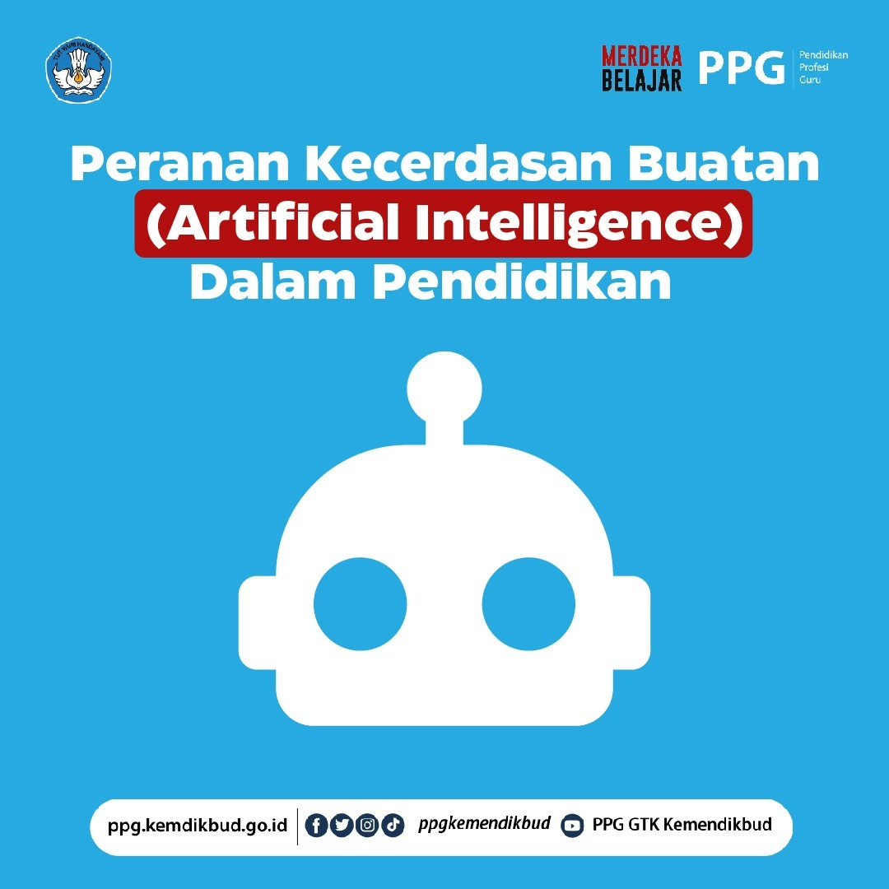

Peranan Kecerdasan Buatan (Artificial Intelligence) dalam Pendidikan
Teknologi (Artificial Intelligence) AI atau kecerdasan buatan mengalami perkembangan yang masif dari tahun ke tahun. Kehadirannya dengan fitur, fungsi, dan tampilan yang baru semakin berdampak pada banyak aspek kehidupan manusia tidak terkecuali dalam pendidikan (Luger dan Stubblefield, 1993).